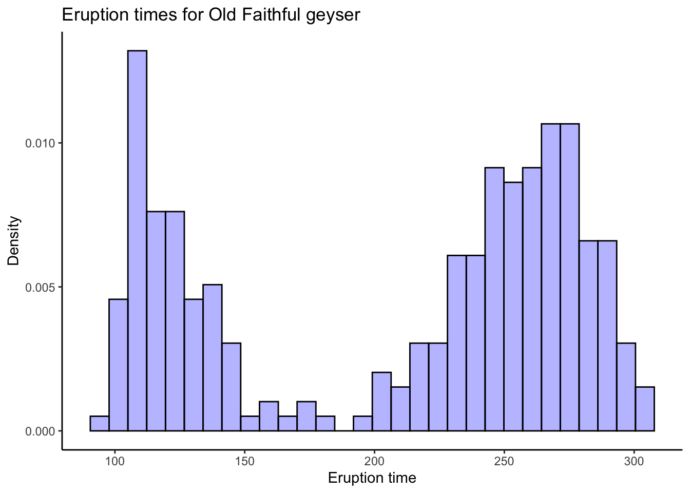
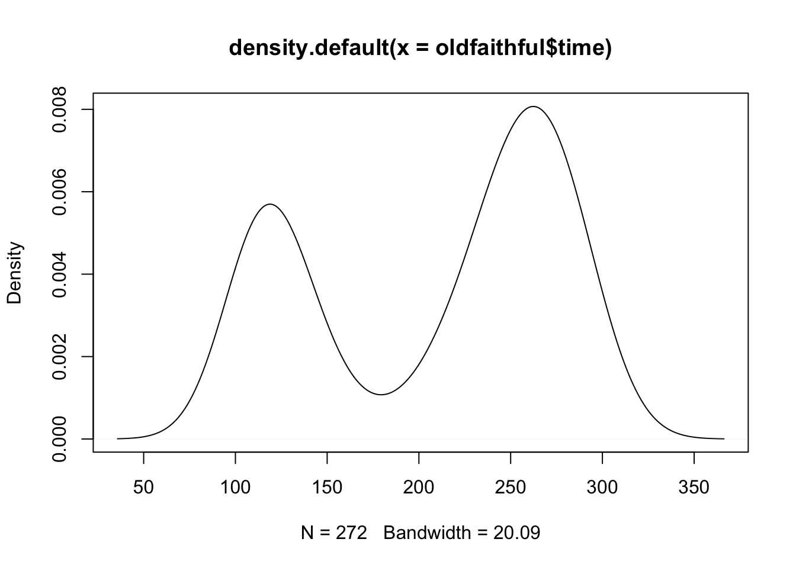
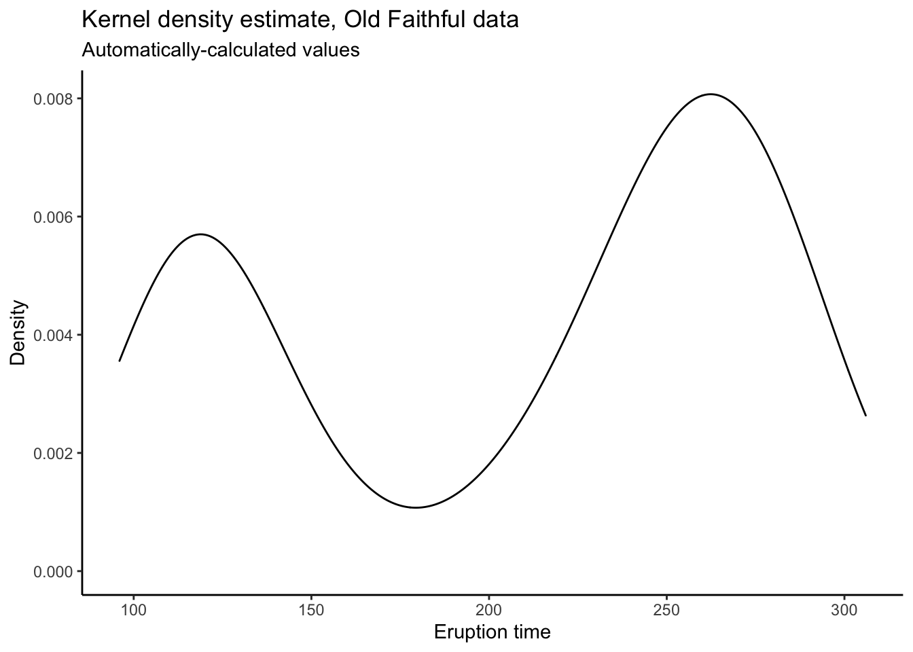
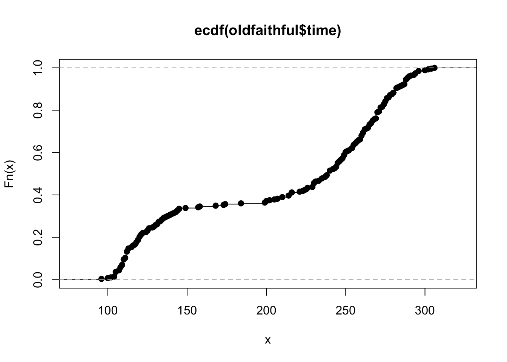
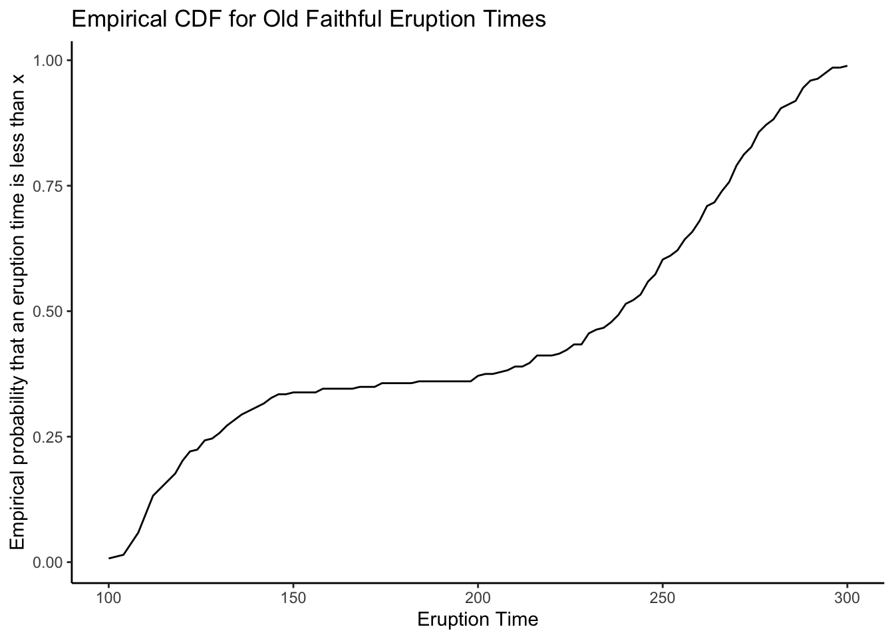
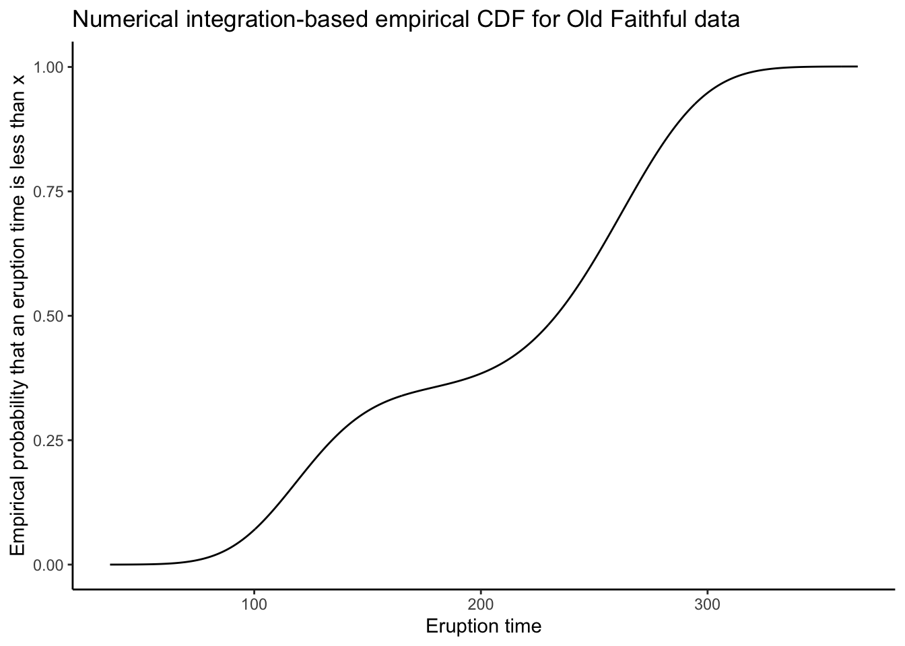

Chapter 2 Supplement to Chapters 15 and 16
This chapter implements much of the analysis shown in chapters 15 and 16 of A Modern Introduction to Probability and Statistics. R code is given for the simple textbook datasets used in the book, and then the concepts are illustrated on real data.
All datasets from the book can be downloaded here: https://www.tudelft.nl/en/eemcs/the-faculty/departments/applied-mathematics/applied-probability/education/mips/.
2.1 Old Faithful
The Old Faithful data is stored in the oldfaithful.txt file in the book data
folder. To read it in to R, first you need to look at its contents.
2.1.1 Read in the data
You can either open it in a text editor (since it’s small), or print out the first few lines on the command line. If you plan on ever doing any meaningful work with data, the latter is really your only choice, so let’s do that. If you have a Mac or Linux-based system, open a terminal. If you have a Windows based system, get a Mac or Linux. Just kidding (not really though). Download Git Bash: https://git-scm.com/download/win and open a new terminal window.
To look at a text file on the command line, use the head command. You have to
tell it where to look on your computer. You can navigate to the folder where the
data is stored and just type the name of the file, or you can type a whole filepath,
or a relative filepath. Right now, I am in the working directory for this book,
and relative to this location, the data is stored in data/MIPSdata. So I type:
## 216
## 108
## 200
## 137
## 272
## 173
## 282
## 216
## 117
## 261 A column of numbers is printed. This indicates that the text file oldfaithdful.txt
contains a single column of numbers, and no header row. A header row is what it’s
called when the first row of the dataset contains the names of the columns.
To read such a dataset into R, we’ll use the read_delim function in the readr
package. The readr package is automatically loaded when we load the tidyverse
package, so we’ll just do that:
library(tidyverse)
oldfaithful <- readr::read_csv(
file = "data/MIPSdata/oldfaithful.txt", # Tell it where the file is
col_names = "time", # Tell it that the first row is NOT column names, and at the same time, tell it what name you want for the column.
col_types = "n" # Tell it that there is one column, and it is "numeric" (n)
)
# Check what was read in using the dplyr::glimpse() function
dplyr::glimpse(oldfaithful)## Observations: 272
## Variables: 1
## $ time <dbl> 216, 108, 200, 137, 272, 173, 282, 216, 117, 261, 110, 235,…By glimpseing the data, we see that the format matches what we saw in the raw
file, and we are given the number of rows too. Check that the number of rows matches
what was in the raw file by printing out the number of rows on the command line
using the wc -l command (“wc” = “word count” and “-l” means count “lines”):
## 271 data/MIPSdata/oldfaithful.txtWhat happened, why don’t they match? They do. The wc -l command actually counts
the number of “newline” characters in the file. It is customary to end a data file
with a newline character. This file doesn’t, though. How do I know? Type the following:
## 111
## 255
## 119
## 135
## 285
## 247
## 129
## 265
## 109
## 268This prints out the last few lines of the file. In this book, these are printed
as normal. But if you do it on the command line, you’ll see that the command
prompt gets printed on the same line as the final number, 268. This indicates
that the file does not end with a newline character, and hence the total number
of newlines in the file is 271, corresponding to 272 actual lines of data.
Remark: I would wager that you are currently surprised that this was so difficult. Even reading in the simplest possible dataset created subtle challenges that needed to be addressed. There is probabably a reason this stuff isn’t taught as heavily in stats courses as it ought to be; it’s difficult and tedious and not as fun as math. But to do meaningful work using data, you have to get good at this stuff. So it is worth struggling through.
2.1.2 Analysis
Now that the data has been read in and checked, we can realized the fruits of
our labour! Chapter 15 analyzes these data using a tabular display, histogram, kernel density
estimate, and empirical CDF. Here is how to do these things in R.
## [1] 216 108 200 137 272 173 282 216 117 261 110 235 252 105 282 130 105
## [18] 288 96 255 108 105 207 184 272 216 118 245 231 266 258 268 202 242
## [35] 230 121 112 290 110 287 261 113 274 105 272 199 230 126 278 120 288
## [52] 283 110 290 104 293 223 100 274 259 134 270 105 288 109 264 250 282
## [69] 124 282 242 118 270 240 119 304 121 274 233 216 248 260 246 158 244
## [86] 296 237 271 130 240 132 260 112 289 110 258 280 225 112 294 149 262
## [103] 126 270 243 112 282 107 291 221 284 138 294 265 102 278 139 276 109
## [120] 265 157 244 255 118 276 226 115 270 136 279 112 250 168 260 110 263
## [137] 113 296 122 224 254 134 272 289 260 119 278 121 306 108 302 240 144
## [154] 276 214 240 270 245 108 238 132 249 120 230 210 275 142 300 116 277
## [171] 115 125 275 200 250 260 270 145 240 250 113 275 255 226 122 266 245
## [188] 110 265 131 288 110 288 246 238 254 210 262 135 280 126 261 248 112
## [205] 276 107 262 231 116 270 143 282 112 230 205 254 144 288 120 249 112
## [222] 256 105 269 240 247 245 256 235 273 245 145 251 133 267 113 111 257
## [239] 237 140 249 141 296 174 275 230 125 262 128 261 132 267 214 270 249
## [256] 229 235 267 120 257 286 272 111 255 119 135 285 247 129 265 109 268# Ugly! You can use the View() function to open the data in a spreadsheet
# Not run:
# View(oldfaithful)
# Histogram using base R
hist(oldfaithful$time)
# Base R graphics are outdated and won't get you a job/will make your papers
# look too classical. Use ggplot2, which is loaded automatically with the tidyverse:
oldfaithful %>%
ggplot(aes(x = time)) +
theme_classic() +
geom_histogram(aes(y = ..density..),bins = 30,colour = "black",fill = "blue",alpha = .3) +
labs(title = "Eruption times for Old Faithful geyser",
x = "Eruption time",
y = "Density")
# Try different numbers of bins and you might see different patterns. Do you think this is a
# good or bad thing, or both?
# Their "optimal" bin width:
s <- sd(oldfaithful$time)
n <- nrow(oldfaithful)
b <- (24*sqrt(pi))^(1/3) * s * (n^(-1/3))
b## [1] 36.89694oldfaithful %>%
ggplot(aes(x = time)) +
theme_classic() +
geom_histogram(aes(y = ..density..),bins = round(b),colour = "black",fill = "blue",alpha = .3) +
labs(title = "Eruption times for Old Faithful geyser",
subtitle = stringr::str_c("'Optimal' bin width of b = ",round(b)),
x = "Eruption time",
y = "Density")
To get kernel density estimates, there are a couple different ways. The density
function in R does the math for you, using a Gaussian kernel (the functions \(K_{i}\)
are taken to be Gaussian density functions with mean and standard deviation
determined by the data). You can plot the output of density using base R or
ggplot. You can also use the ggplot geom_density function to do something
similar automatically.
##
## Call:
## density.default(x = oldfaithful$time)
##
## Data: oldfaithful$time (272 obs.); Bandwidth 'bw' = 20.09
##
## x y
## Min. : 35.74 Min. :3.771e-06
## 1st Qu.:118.37 1st Qu.:8.571e-04
## Median :201.00 Median :2.412e-03
## Mean :201.00 Mean :3.022e-03
## 3rd Qu.:283.63 3rd Qu.:5.143e-03
## Max. :366.26 Max. :8.070e-03
# Okay... ggplot?
tibble(x = dens$x,y = dens$y) %>%
ggplot(aes(x = x,y = y)) +
theme_classic() +
geom_line() +
labs(title = "Kernel density estimate, Old Faithful data",
subtitle = "Manually-calculated values",
x = "Eruption time",
y = "Density")
# Can also do automatically:
oldfaithful %>%
ggplot(aes(x = time)) +
theme_classic() +
geom_density() +
labs(title = "Kernel density estimate, Old Faithful data",
subtitle = "Automatically-calculated values",
x = "Eruption time",
y = "Density")
# The reason to manually calculate the values is because you have more control.
# I don't know what's happening at the endpoints there, and it's too much work
# to go and figure out how to make ggplot not do that.
# When you calculate the plotting values yourself and then put them into ggplot,
# you have total control!For the empirical distribution function, we use the ecdf function in R. You
would think this function should behave in a similar manner to the density function,
but it doesn’t. It returns a function which computes the ecdf. It still has a plot
method, but to use it with ggplot we have to use stat_function:

# ggplot
tibble(x = c(100,300)) %>% # Tell ggplot we want to plot the ecdf from 100 to 300
ggplot(aes(x = x)) +
theme_classic() +
stat_function(fun = faithful_ecdf) +
labs(title = "Empirical CDF for Old Faithful Eruption Times",
x = "Eruption Time",
y = "Empirical probability that an eruption time is less than x")
Discussion point: the CDF is the integrated pdf: \[ F(x) = \int_{-\infty}{x}f(s)ds \] So why don’t we integrate the kernel density estimate to get the empirical CDF? One of the great benefits of taking a computation-forward approach to statistical inference is that we can “shoot first and ask questions later”- just try it, and then (maybe) use math to explain the results.
Here is the world’s most naive numerical integration-based estimate of a CDF:
tibble(
x = dens$x[-1],
y = cumsum(dens$y[-1]) * diff(dens$x)
) %>%
ggplot(aes(x = x,y = y)) +
theme_classic() +
geom_line() +
labs(title = "Numerical integration-based empirical CDF for Old Faithful data",
x = "Eruption time",
y = "Empirical probability that an eruption time is less than x")
What do you think? Is this better, worse, or just different than the ECDF?